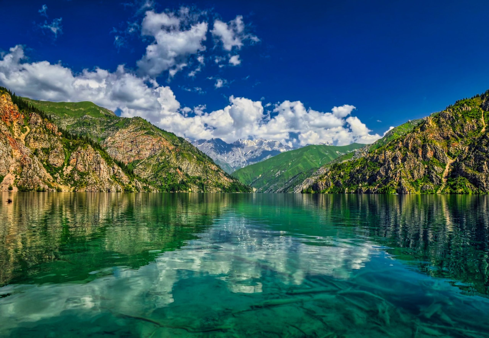
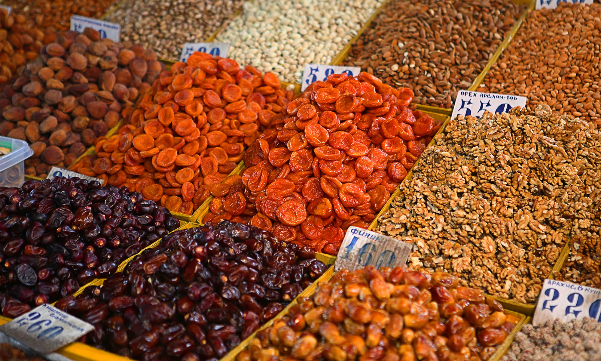
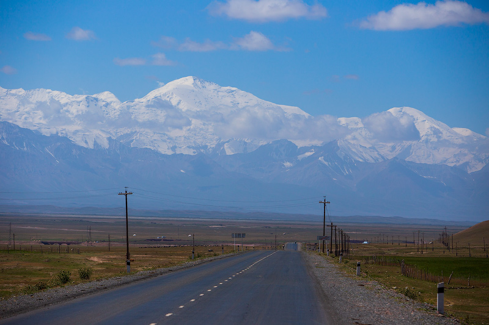

Osh plov
Also known as devzira plov, this local dish exudes unimaginable flavours. There are several versions of plov cooking across Central Asia, but the Osh plov uses a unique combination of ingredients and seasonings. Red rice (devzira) is cooked to perfection over low heat, along with vegetables (yellow carrots and onions), tender meat and a special bouquet of spices. Served with Shakarap salad, a fairly simple tomato and onion salad, the Osh plov is a Central Asian culinary quintessence.Maida manti
Maida manty is a delicious dish in the form of small dumplings that you will find only in the Osh region. Despite similarities with its older culinary sibling, the manty dish, which is very popular throughout Kyrgyzstan, maida manty are small, exquisitely handmade dumplings with mashed potatoes, steamed with a perfect fine texture of dough. Order a small plate as an appetiser or a big plate to share with friends. The dish is often served with spicy red onion and sour cream.Traditional Kyrgyz manty is usually a meat dish, but maidy manty is traditionally made without animal products (dairy products, eggs or animal fat), so it is an ideal dish for vegetarians and vegans. Another dish suitable for vegetarians is kok chuchwara, which are small dumplings stuffed with jusai, a local herb that resembles spinach.Samsa
Osh has long prided itself on turning even the most traditional Kyrgyz dishes into unique, as evidenced by the mega - samsa (a dish known in the city as Chon Samsa), which can be bought at various points in the city. Even the smaller sized samsa, known as Parmuda Samsa, is also big in size and hearty. Irrespective of size, samsa is a puff pastry baked in a tandoor oven and stuffed with meat and onions. Osh samsas, known as Osh samsas, are samosas slow-cooked on the walls of a tandyr oven. Some are sprinkled with sesame seeds, to note that such samsas have chilli pepper added for extra flavour. As a rule, samsas are cooked with lamb, but there are some in which potatoes are added, which only adds extra flavour and aroma. Samsa is a great dish for a hearty snack, if you eat it hot and freshly baked in a tandoor oven. You can also stock up on samosas if you go camping, in which case, rest assured, you will not go hungry when you go camping.Shish kebab
This delicious grilled meat is better known as kebab in most parts of the world. Regardless of what you call it, this meat is served cooked to perfection, usually with fresh onions and vinegar. Even if you have already tried this dish during your travels, it is always worth trying it again, as local spices and marinade often differ not only in different corners and regions of Kyrgyzstan, but also local cooks may have their own culinary secrets. Shish kebab is often made from lamb, but it can also be made from chicken, beef or goat meat.Beshbarmak
Osh has long prided itself on turning even the most traditional Kyrgyz dishes into unique, as evidenced by the mega - samsa (a dish known in the city as Chon Samsa), which can be bought at various points in the city. Even the smaller sized samsa, known as Parmuda Samsa, is also big in size and hearty. Irrespective of size, samsa is a puff pastry baked in a tandoor oven and stuffed with meat and onions. Osh samsas, known as Osh samsas, are samosas slow-cooked on the walls of a tandyr oven. Some are sprinkled with sesame seeds, to note that such samsas have chilli pepper added for extra flavour. As a rule, samsas are cooked with lamb, but there are some in which potatoes are added, which only adds extra flavour and aroma. Samsa is a great dish for a hearty snack, if you eat it hot and freshly baked in a tandoor oven. You can also stock up on samosas if you go camping, in which case, rest assured, you will not go hungry when you go camping.Kuurdak
A distinctive feature of kuurdak is the right blend of spices and flavours. This tasty Kyrgyz dish, especially popular during the cold winter months, includes fried marinated meat, onions and potatoes.Lagman
Hand-stretched noodles combined with savoury meats, vegetables and herbs are what it takes to create a dish that incorporates the best of Central Asian cuisine. The different ethnic groups in the region have brought something unique to the dish, which is why it is a dish worth trying again and again. In addition to the variety of herbs used in the dish and added to the meat, this crown dish of the region can be served with differently cooked noodles - fried, boiled or as a noodle soup. There is another dish, ganfan, which has similar basic ingredients but is served with rice instead of noodles. And if you want a little spice in your meal, ask for a delightful spice, laza, which is a seasoning of red pepper, garlic and oil.Oromo
Oromo is a delicious traditional Kyrgyz dish. It is made by stuffing a large circle of rolled thin dough with various local and seasonal ingredients, which is then rolled up into a roll and steamed in a special pot. Oromo can be prepared in different ways and you won't find many similar versions of the dish, but any variation will be delicious as well. The meat-lovers usually make the oromo with minced meat and onions but vegetarians can make it with cabbage and carrots. This dish is particularly delicious with kaimak (local sour cream).Kymyz
Kymyz is the most famous drink of Kyrgyzstan. Travellers should not leave the country without tasting this drink made from mare's milk. It tastes similar to Turkish ayran and kefir. Kymyz is a favourite drink of the Kyrgyz and may be a revelation to some travellers. According to locals, koumiss also has properties that aid in better digestion, which helps to 'balance out' the nutritional heaviness of some traditional dishes, meaning that one should not try too much koumiss the first time.Suleiman Mountain

Osh is Kyrgyzstan's second largest city after Bishkek, with a population of about 250,000, officially called the "Southern Capital". It was one of the religious Muslim centres of Central Asia. It is best known for its ancient mosques in the city centre, as well as the Sulaiman-Too mountain (Sulaiman-Takhty, Solomon's Throne), which is one of the pilgrimage sites of Central Asian Muslims.Suleiman Mountain also has seven caves with their own names: Chakatamar from the word 'chakka' which means 'to drip', from the ceiling of which, water, considered to be healing, constantly drips; Tepeunkur 'cave on top' - a cave which has an almost vertical descent; Chilten Khana or Teshik Tash 'hole stone' which has three entrances; Ishen-Unkur cave, which plays the role of a kind of a house of reflection (hujra); Rusha-Unkur cave or Orlov cave (the largest of the caves) consists of two tiers and currently houses the cave complex of the Osh Joint Historical and Cultural Museum Reserve.
Sary-Chelek Lake
Sary-Chelek, translated from Kyrgyz as "yellow bowl", is a freshwater lake in Kyrgyzstan. It is located on the territory of the Sary-Chelek State Biosphere Reserve, near the junction of Chatkal Ridge and At-Oinok Ridge, in the Western Tien Shan. The lake was formed about 10 thousand years ago as a result of a rock slide. 7.5 km in length from north-east to south-west, the area is 507 ha. The lake is situated 500 km from Bishkek on the territory of the Sary-Chelek reserve. The deepest mark of the lake is 234 m. It is the third deepest lake in Central Asia and the second deepest in Kyrgyzstan. The shoreline is highly indented and lined with dense forests that sink into the depths of the lake. There are shallow sections of the lake only in the larger of the bays. The lake is fed by numerous streams, underground streams and the waters of the Sary-Chelek River. The lake is drained by the Tuskual River. There are many disputes about the formation of the lake. Some scientists think that the lake was formed due to the collision of two mountain ridges that blocked the river, others think that the lake was formed as a result of a change in the fault line about 2000 years ago. The lake's water is often blue with a greenish tint, which makes the lake very beautiful.
Bazaar in Osh
The bazaar in Osh, the second largest city in Kyrgyzstan, is a real Oriental bazaar, stretching for several blocks. Once there, you will want to immediately buy everything you see and immediately eat it.It is also said that the Osh bazaar has everything... Everything is there, except perhaps tourist gas cookers. But it is here that you can buy Uzgen rice, which is said to be the best for making pilaw. Besides rice, here you can buy millet, beans, peas, buckwheat and many other groats and seeds. What kind of food is prepared in the Orient without spices? You'll find a great variety of aromatic spices in the bazaar and they are meant to make the food even tastier. You can't miss the poppy seed and sesame seed cakes baked on the spot. Kurut, a dried, heavily salted ayran, is especially popular. It is transported around the market on carts. It is said to quench one's thirst. Peanuts are sold in large, canvas sacks. You can also buy live poultry and try on the national headdress next to it. You can buy melons and watermelons next to beautiful, handmade knives. You just can't leave here without shopping.
Lenin Peak
Lenin Peak (7134 m) is one of the most famous seven-thousandth peaks in the Pamirs. The slopes of the massif are covered by powerful glaciers and in some places are rugged with deep crevasses. The classical route to the peak has no steep rock or ice sections, in some parts the slopes are 45-55º steep, there are frequent avalanches and ice cavings. In spite of the technical simplicity of the classical route, the ascent to Lenin Peak is classified as high-altitude mountaineering and requires from the climbers robust physical and mental health, suitable equipment and a sensible approach to acclimatisation. Experience of climbing at least 5,000m above sea level is required.